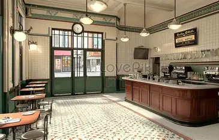

핑크퐁퐁라떼로 유명해진 곳
베리 로젠크로이츠가 왔다간 곳으로 유명해졌다. 핑크퐁퐁라떼에는 딸기가 약간 들어가 보기엔 이상하나 맛 하나는 끝내준다.
그녀가 한번 먹고 반해 자주온다. 그래서 그녀가 홀린 사람들도 같이와 핑크퐁퐁라떼가 잘팔려 부자가 되는 중인 사장은 행복하다.
환영합니다!

짱 맛있는 카페요
베리 로젠크로이츠가 왔다간 곳으로 유명해졌다. 핑크퐁퐁라떼에는 딸기가 약간 들어가 보기엔 이상하나 맛 하나는 끝내준다.
그녀가 한번 먹고 반해 자주온다. 그래서 그녀가 홀린 사람들도 같이와 핑크퐁퐁라떼가 잘팔려 부자가 되는 중인 사장은 행복하다.
| 음료 | 커피 | 차 | 에이드 | 팝팝 |
|---|---|---|---|---|
| 메뉴 | 아메아메아메리카노 | 홍홍홍홍박차 | 어쩔레몬에이드 | 도파민과다팝 |
| - | 핑크퐁퐁라떼 | 오빠차뽑았다널데리러가 | 딸기사고딸기에이드 | 마이리틀소다팝 |